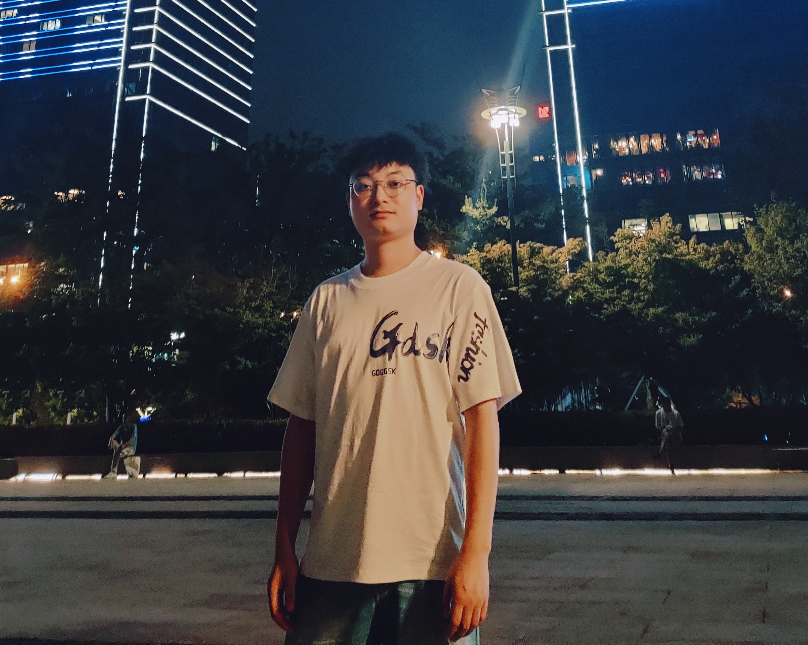
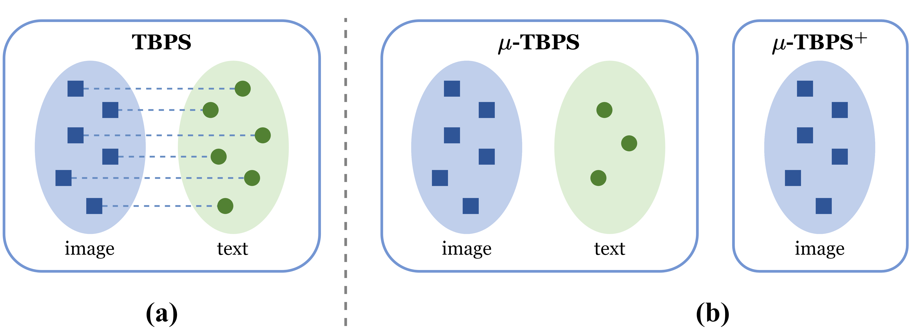
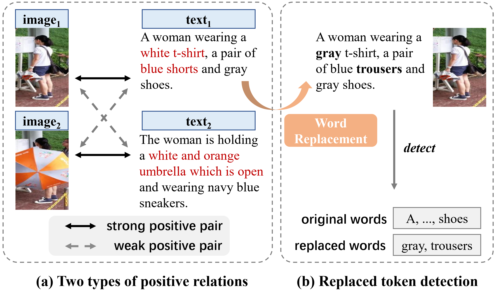
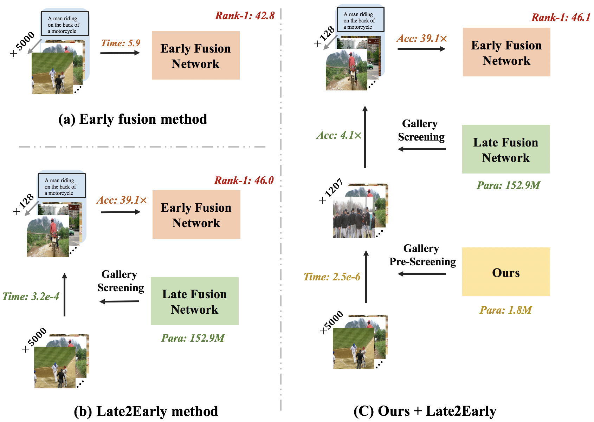

|
Yang Bai 白杨 Hi, I am currently a postgraduate (master) student at Soochow University in Suzhou, China, advised by Min Cao. Prior to that, I received my B.S. degree in Computer Science and Technology from Renmin University of China (RUC). Before starting my postgraduate study, I've worked at Run and Waterdrop for three years, mainly engaged in data collection. Email / CV / Google Scholar / Github |
 |
{kind=link}
News
|
ResearchMy research interests primarily lie in Vision-Language Understanding, including Text-based Person Search (TBPS), Image-Text Retrieval (ITR) and Video-Text Retrieval (VTR). I believe "Tech Otakus Save the World". |
|  |
Text-based Person Search without Parallel Image-Text Data
Yang Bai, Jingyao Wang, Min Cao, Chen Chen, Ziqiang Cao, Liqiang Nie, Min Zhang ACM International Conference on Multimedia (ACM MM, CCF-A), 2023 |
|  |
RaSa: Relation and Sensitivity Aware Representation Learning for Text-based Person Search
Yang Bai, Min Cao, Daming Gao, Ziqiang Cao, Chen Chen, Zhenfeng Fan, Liqiang Nie, Min Zhang
International Joint Conference on Artificial Intelligence (IJCAI, CCF-A), 2023
|
|  |
Efficient Image-Text Retrieval via Keyword-Guided Pre-Screening
Min Cao, Yang Bai, Jingyao Wang, Ziqiang Cao, Liqiang Nie, Min Zhang
arXiv, 2023
|
Misc |
| Reviewer in ECAI 2023, EMNLP 2023 |
| Teaching Assistant in COMS3006: Algorithm Design and Analysis |
|
|